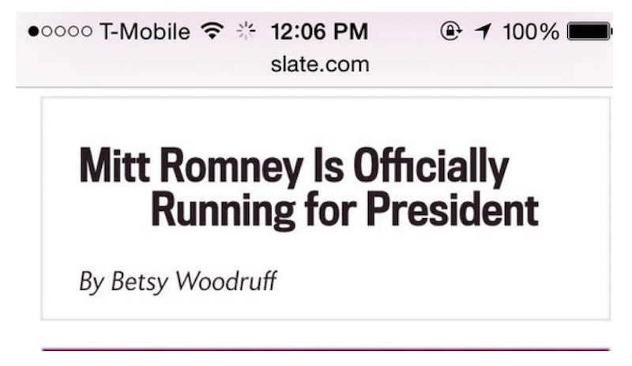

The MITT ROMNEY web font problem
The MITT ROMNEY web font problem is nothing but the browser hiding text while the web font is loading. This problem occurs when you use multiple weights and styles of the same typeface together.
The problem came into existence when an article written by Slate.com used different fonts for its regular and italic text.
The headline from Slate.com was important breaking news about Mitt Romney's intention to run for President. The headline was rendered using two different web fonts, one for regular and one for italic.
This is how the page looks when all the web fonts have loaded:

To explain why this happened, we have to become familiar with the Flash of Invisible Text (FOIT), or how the browser hides the text while web font is loading. Each web font has its own seperate FOIT. By combining two web fonts together in a single headline, there is a preference order for FOIT.
At one point the headline indicated that Mitt Romney is running for President. When the page finishes loading, the real message is Mitt Romney is not running for President. Obviously, this is bad, especially for a news organization that depends on clarity and accuracy.
There are a few ways to deal with this problem
Eliminating FOIT by switching to unstyled fallback text while the font is loading.
We can also use Flash of Faux Text approach, utilizing font-synthesis to show browser generated bold and italic fallbacks until the real web fonts load.
Some of the content in this article might be referred from one of the following sources
ZachLeat Mitt Romney Web Font Problem
Images - Both images are tweets by James Muspratt | Image link - Tweet by James Muspratt